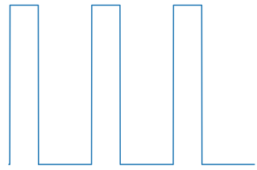
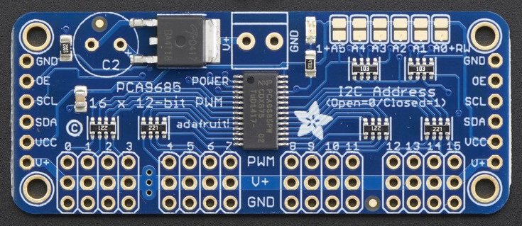

Output Component¶
Each platform of the output domain exposes some output to
esphomelib. These are grouped into two categories: binary outputs
(that can only be ON/OFF) and float outputs (like PWM, can output
any rational value between 0 and 1).
|  | ||
| ESP8266 Software PWM | GPIO Output | ESP32 LEDC |
|  | ||
| PCA9685 |
Base Output Configuration¶
Each output platform extends this configuration schema.
# Example configuration entry
output:
- platform: ...
id: myoutput_id
power_supply: power_supply_id
inverted: False
max_power: 0.75
Configuration variables:
- id (Required, id): The id to use for this output component.
- power_supply (Optional, id): The power supply to connect to this output. When the output is enabled, the power supply will automatically be switched on too.
- inverted (Optional, boolean): If the output should be treated
as inverted. Defaults to
False. - max_power (Optional, float): Only for float outputs. Sets the maximum output value of this output platform. Each value will be multiplied by this. Must be in range from 0 to 1. Defaults to 1.